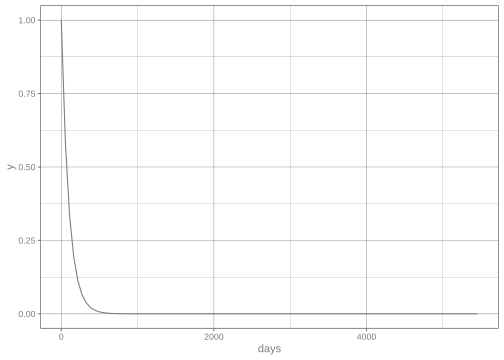
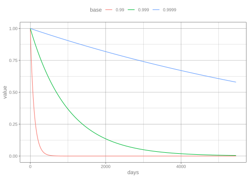

library(tidymodels)
data(Chicago)
Chicago <- Chicago |>
select(ridership, date, one_of(stations))Creating case weights based on time
tuning and workflows
model fitting
time series
Create models that use case weights, extract them from fitted models, and visualize them.
Introduction
To use code in this article, you will need to install the following packages: tidymodels.
This article demonstrates how to create and use importance weights in a predictive model. Using importance weights is a way to have our model care more about some observations than others.
Example Data
To demonstrate we will use the Chicago data from the modeldata package.
From ?Chicago
These data are from Kuhn and Johnson (2020) and contain an abbreviated training set for modeling the number of people (in thousands) who enter the Clark and Lake L station.
The date column corresponds to the current date. The columns with station names (Austin through California) are a sample of the columns used in the original analysis (for filesize reasons). These are 14 day lag variables (i.e. date - 14 days). There are columns related to weather and sports team schedules.
For simplicity, we have limited our view to the date and station variables.
Creating weights
This data set contains daily information from 2001-01-22 to 2016-08-28. We will pretend that it is January 1st, 2016 and we want to predict the ridership for the remainder of 2016 using the date and station variables as predictors. Without any weighting, all the previous observations would have the same influence on the model. This may not be ideal since some observations appear a long time ago and not be as representative of the future as more recent observations.
We could just use recent observations to fit the model, ensuring that the training data stays as close to the testing data as possible. While a tempting idea, it would throw out a lot of informative data. Instead let us assign a weight to each observation, related to how long ago the observation was taken. This way we are not completely throwing away any observation; we are only giving less weight to data farther in the past.
We need to decide on a way to calculate the case weights. The main thing constraint is that the weight cannot be negative, and it would be nice if today was weighted as 1. So we need a function that is 1 when x = 0 and decreasing otherwise. There are many kinds of functions like that, and we will be using this exponential decay function
\[ weight = base ^ x \]
where base is some constant and x is the number of days. To make sure that we select a reasonable base, we need to do some manual testing, starting with looking at how old the oldest observation is.
Using this information we can visualize the weight curve, to see if we like the value of base.
tibble_days <- tibble(days = 0:5457)
tibble_days |>
ggplot(aes(days)) +
geom_function(fun = ~ 0.99 ^ .x)
setting base to 0.99 appears to be down weighted too much. Any observation more than a year old would have no influence.
Let us try a few more values to find

From this, we could pick something around 0.999 since it gives a better balance. Let’s create a small function to help us encode this weight.
weights_from_dates <- function(x, ref) {
if_else(
condition = x >= ref,
true = 1, # <- Notice that I'm setting any future weight to 1.
false = 0.999 ^ as.numeric(difftime(ref, x, units = "days"))
)
}We then modify Chicago to add a weight column, explicitly making it an importance weight with importance_weight().
Chicago <- Chicago |>
mutate(weight = weights_from_dates(date, "2016-01-01"),
weight = importance_weights(weight))This approach to creating importance weights from dates is not limited to cases where we have daily observations. You are free to create similar weights if you have gaps or repeated observations within the same day. Likewise, you don’t need to use days as the unit. Seconds, weeks, or years could be used as well.
Modeling
We start by splitting up our data into a training and testing set based on the day "2016-01-01". We added weights to the data set before splitting it so each set has weights.
Next, we are going to create a recipe. The weights won’t have any influence on the preprocessing since none of these operations are supervised and we are using importance weights.
base_recipe <-
recipe(ridership ~ ., data = Chicago_train) |>
# Create date features
step_date(date) |>
step_holiday(date, keep_original_cols = FALSE) |>
# Remove any columns with a single unique value
step_zv(all_predictors()) |>
# Normalize all the numerical features
step_normalize(all_numeric_predictors()) |>
# Perform PCA to reduce the correlation bet the stations
step_pca(all_numeric_predictors(), threshold = 0.95)Next we need to build the rest of the workflow. We use a linear regression specification
lm_spec <-
linear_reg() |>
set_engine("lm")and we add these together in the workflow. To activate the case weights, we use the add_case_weights() function to specify the name of the case weights being used.
lm_wflow <-
workflow() |>
add_case_weights(weight) |>
add_recipe(base_recipe) |>
add_model(lm_spec)
lm_wflow
#> ══ Workflow ══════════════════════════════════════════════════════════
#> Preprocessor: Recipe
#> Model: linear_reg()
#>
#> ── Preprocessor ──────────────────────────────────────────────────────
#> 5 Recipe Steps
#>
#> • step_date()
#> • step_holiday()
#> • step_zv()
#> • step_normalize()
#> • step_pca()
#>
#> ── Case Weights ──────────────────────────────────────────────────────
#> weight
#>
#> ── Model ─────────────────────────────────────────────────────────────
#> Linear Regression Model Specification (regression)
#>
#> Computational engine: lmWith all that done we can fit the workflow with the usual syntax:
lm_fit <- fit(lm_wflow, data = Chicago_train)
lm_fit
#> ══ Workflow [trained] ════════════════════════════════════════════════
#> Preprocessor: Recipe
#> Model: linear_reg()
#>
#> ── Preprocessor ──────────────────────────────────────────────────────
#> 5 Recipe Steps
#>
#> • step_date()
#> • step_holiday()
#> • step_zv()
#> • step_normalize()
#> • step_pca()
#>
#> ── Case Weights ──────────────────────────────────────────────────────
#> weight
#>
#> ── Model ─────────────────────────────────────────────────────────────
#>
#> Call:
#> stats::lm(formula = ..y ~ ., data = data, weights = weights)
#>
#> Coefficients:
#> (Intercept) date_dowMon date_dowTue date_dowWed date_dowThu
#> 1.762599 13.307654 14.689027 14.620178 14.382313
#> date_dowFri date_dowSat date_monthFeb date_monthMar date_monthApr
#> 13.695433 1.228233 0.364342 1.348229 1.409897
#> date_monthMay date_monthJun date_monthJul date_monthAug date_monthSep
#> 1.188189 2.598296 2.219721 2.406998 1.932061
#> date_monthOct date_monthNov date_monthDec PC1 PC2
#> 2.655552 0.909007 -0.004751 0.073014 -1.591021
#> PC3 PC4 PC5
#> -0.608386 -0.205305 0.696010Session information
#> ─ Session info ─────────────────────────────────────────────────────
#> version R version 4.6.0 (2026-04-24)
#> language (EN)
#> pandoc 3.1.3
#> quarto 1.9.38
#>
#> ─ Packages ─────────────────────────────────────────────────────────
#> package version date (UTC)
#> broom 1.0.13 2026-05-14
#> dials 1.4.3 2026-04-11
#> dplyr 1.2.1 2026-04-03
#> ggplot2 4.0.3 2026-04-22
#> infer 1.1.0 2025-12-18
#> parsnip 1.6.0 2026-05-14
#> purrr 1.2.2 2026-04-10
#> recipes 1.3.3 2026-05-30
#> rlang 1.2.0 2026-04-06
#> rsample 1.3.2 2026-01-30
#> tibble 3.3.1 2026-01-11
#> tidymodels 1.5.0 2026-04-23
#> tune 2.1.0 2026-04-17
#> workflows 1.3.0 2025-08-27
#> yardstick 1.4.0 2026-04-07
#>
#> ────────────────────────────────────────────────────────────────────